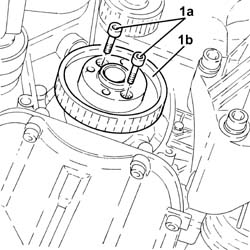

1092E22 COUNTER-ROTATING SHAFT DRIVE TOOTHED BELT DRIVE PULLEY - R + R
- Path
- Procedures > 10 ENGINE UNIT > 1092 VARIOUS ENGINE COMPONENT CONTROLS > 1092E COUNTER-ROTATING SHAFT DRIVE > 1092E22 COUNTER-ROTATING SHAFT DRIVE TOOTHED BELT DRIVE PULLEY - R + R
- Kind
- repair procedure (removal / refitting; the operation number is the code)
- Applies to
- engines: 2.0 JTS; all production periods
- Interactive page
- https://sloeber94.github.io/elrnDB-aGt/en/#/125001201
Applies to: engines: 2.0 JTS; all production periods
 Removing
Removing
 Refitting
RefittingPosition the vehicle on the ramp
Proceed with removal
Op. 1016A40 IGNITION COIL COVER ON CYLINDER HEAD- R+R
Proceed with removal
Proceed with removal
Op. 4450B04 RIGHT FRONT WHEEL R R
Proceed with removal
Proceed with removal
Op. 7055B66 ENGINE COMPARTMENT DUST SHIELD PROTECTION IN RIGHT FRONT WHEEL ARCH - R.R.
1. Undo the bolts (1a) and remove the counter-balance shaft drive belt drive pulley (1b).
Op. 7055B54 UNDER-ENGINE GUARD - R R
Op. 1092E10 COUNTER-ROTATING SHAFT DRIVE TOOTHED BELT - R + R

Applies to: engines: 2.0 JTS; all production periods
Refitting
RemovingPlace the counter-balance shaft drive belt drive pulley back in its housing and secure it tightening the bolts to the recommended torque.
 | Fastening | Component | Ø | Value (daNm) |
|---|---|---|---|---|
- | Bolt | COUNTER-ROTATING SHAFT DRIVE PULLEY | M6 | (Timing drive pulley side.) 0.8÷1.0 |
Proceed with refitting
Op. 1092E10 COUNTER-ROTATING SHAFT DRIVE TOOTHED BELT - R + R.
Proceed with refitting
Op. 7055B54 UNDER-ENGINE GUARD - R R.
Proceed with refitting
Op. 7055B66 ENGINE COMPARTMENT DUST SHIELD PROTECTION IN RIGHT FRONT WHEEL ARCH - R.R..
Proceed with refitting
Op. 4450B04 RIGHT FRONT WHEEL R R.
Proceed with refitting
Op. 1016A40 IGNITION COIL COVER ON CYLINDER HEAD- R+R.
Remove the car from the ramps.